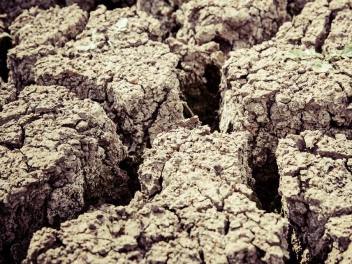
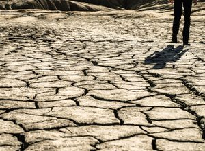
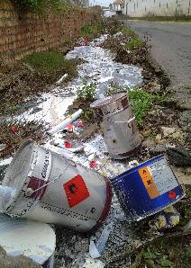
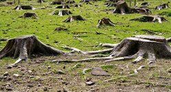
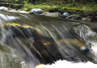

Publicado por: David Pérez Saché, el 19/09/22
Valoración de los usuarios: 4.5/5 (33 votos)
El cambio climático repercute de manera considerable en el suelo, y los cambios en el uso de la tierra y el suelo pueden acelerar o ralentizar el cambio climático. Sin unos suelos más sanos y una gestión sostenible de la tierra y el suelo, no podemos abordar la crisis climática, producir suficientes alimentos ni adaptarnos a un clima en cambio. La respuesta podría estar en preservar y restaurar ecosistemas principales y en dejar que la naturaleza capture carbono de la atmósfera.
 A menudo se piensa que el cambio climático es algo que ocurre en la atmósfera. Después de todo, cuando las plantas realizan la fotosíntesis extraen carbono de la atmósfera. Pero el carbono atmosférico también afecta al suelo, porque el carbono que no se utiliza para el crecimiento de las plantas en superficie se distribuye a través de las raíces y se deposita en la tierra. Si no se altera de algún modo, este carbono puede estabilizarse y permanecer confinado durante miles de años. Por tanto, un suelo sano puede contribuir a mitigar el cambio climático.
En lo que respecta al depósito de carbono, no todos los suelos son iguales. Los suelos más ricos en carbono son las turberas, que se encuentran sobre todo en el norte de Europa, el Reino Unido e Irlanda. El suelo de los pastizales almacena mucho carbono por hectárea, mientras que el suelo de las zonas más calurosas y secas del sur de Europa contiene menos carbono.
Hay varios tipos de degradación de los suelos, aunque aquí veremos los más comunes:
El proceso extremo de degradación del suelo se conoce como "desertificación". En este caso, una tierra fértil pasa a transformarse en un desierto yermo de vida.
| Gestión de residuos y vertidos |
|---|
|

Cuando se produce una gestión de residuos y de vertidos deficiente (o incluso directamente ilegal), éstos componentes acaban en los suelos, dando lugar a contaminación. Son especialmente perjudiciales los vertidos, dado que al ser líquidos se propagan rápidamente y en grandes extensiones de terreno. Residuos como los metales pesados (como el plomo) son muy difíciles de eliminar. Además pueden agravar otros problemas. Por ejemplo, los fragmentos de vidrio en climas áridos (especialmente en áreas con plantas herbáceas que se secan en verano) aumentan el riesgo de incendios. |
| Tala, agricultura extensiva y sobrepastoreo |
|

La tala, la agricultura extensiva (directamente relacionada con la tala en muchos casos) y el sobrepastoreo contribuyen a la eliminación de la cubierta vegetal, cuyas raíces previenen la erosión del suelo. Puede afectar a grandes extensiones. El monocultivo sin rotación degrada el suelo por agotamiento de alguno de los nutrientes. Se agravan con los incendios forestales. |
| Incendios y sobreexplotación de recursos hídricos |
|
En aquellas zonas donde la vegetación no es xerófila ni pirófila, la falta de agua provoca la muerte de las especies que dan origen al horizonte superficial del suelo, empobreciéndolo. Contribuyen igualmente a la erosión. |
| Gestión del territorio |
|

La gestión del territorio puede llegar a ser muy dañina, lo que dependerá en gran medida de las características concretas del territorio. Por ejemplo, las grandes presas evitan la distribución de limos y arcillas con alto contenido orgánico en zonas adyacentes al río y modifican el perfil hídrico del territorio. |
Los ecosistemas sufren graves desequilibrios, ya que pierden numerosas especies endémicas mientras favorecen el crecimiento de las especies oportunistas.
La tierra se vuelve cada vez menos fértil, aumentando así el uso de fertilizantes por parte de los agricultores. Este hecho provoca que la tierra sea inútil para los cultivos, perdida de flora y desaparición de especies, perdida de la humedad que aporta la flora, mayor riesgo de desprendimiento de rocas, perdida del rendimiento de la tierra y aumento del coste cuando se cultiva.
Respecto a la ganadería, aumentan significativamente los costes de alimentar y mantener a los animales, puesto que desaparecen los pastos y el empobrecimiento de las poblaciones rurales provoca que la población se desplace hacia las ciudades, el llamado despoblamiento rural.
Un estudio en Costa de Marfil, por ejemplo, da cuenta de que:
Igualmente es difícil saber cuánta cantidad de abono y fertilizantes son necesarios cada año para reponer la pérdida de nutrientes, así como materia orgánica arrasada por la erosión. No obstante, se sabe que se traduce en grandes pérdidas monetarias.
Sin embargo, la principal consecuencia de la degradación del suelo es el daño al ecosistema, pues en aquellas zonas donde no han sido cuidados los relieves, ha habido deforestación y contaminación por basura y residuos químicos, el daño es casi total.
En abril de 2019, un grupo de científicos y activistas muy influyentes instaron a "defender, restaurar y restablecer":
Según un análisis de la información existente sobre las interrelaciones entre el suelo y el cambio climático (Informe Climsoil), el suelo de la UE almacena en torno a 75 000 millones de toneladas de carbono orgánico. Aproximadamente la mitad de estas reservas en el suelo se encuentran en Suecia, Finlandia y el Reino Unido, puesto queestos países tienen más suelos forestales que el resto de zonas, en particular suelos orgánicos húmedos como la turba. Para contextualizar estos datos, según las estimacione más recientes de la AEMA, las emisiones totales de CO2 de la UE en 2017 ascendieron a aproximadamente 4 500 millones de toneladas.
La cantidad de carbono orgánico almacenado en los suelos de la UE podría estar aumentando lentamente, pero las estimaciones sobre el ritmo de este cambio son muy inciertas. Para complicar más la situación, los depósitos de carbono orgánico también están cambiando constantemente, puesto que las plantas capturan el dióxido de carbono del aire antes de descomponerlo y liberar los gases otra vez en la atmósfera. Un informe del Grupo Intergubernamental de Expertos sobre el Cambio Climático (IPCC) confirma que deben reducirse las emisiones de gases de efecto invernadero de todos los sectores, incluidos la tierra y los alimentos, a fin de lograr el objetivo de mantener el calentamiento global muy por debajo de 2 °C.
A pesar de las incertidumbres, restaurar los ecosistemas y mejorar la calidad del suelo podría ser una medida muy rentable en cuanto a la acción climática con un triple impacto. En primer lugar, las plantas en fase de crecimiento eliminan el dióxido de carbono de la atmósfera. Según la FAO, restaurar los suelos que están actualmente degradados podría eliminar hasta 63 000 millones de toneladas de carbono, lo que compensaría un pequeño pero importante porcentaje de las emisiones de gases de efecto invernadero. En segundo lugar, los suelos sanos mantienen el carbono bajo tierra. En tercer lugar, muchas zonas naturales y seminaturales actúan como potentes defensas frente a los efectos del cambio climático.
Hay numerosos ejemplos de beneficios. Por ejemplo, los espacios cercanos a los ríos (zonas ribereñas) y los espacios verdes de las ciudades pueden actuar como una rentable protección frente a inundaciones y olas de calor. Una tierra y un suelo sanos pueden absorber y almacenar el exceso de agua y aliviar las inundaciones. Los parques y otras zonas naturales de las ciudades también pueden contribuir a refrescar el ambiente durante las olas de calor, en parte gracias al agua presente en su suelo. En las estaciones secas, los ecosistemas sanos pueden liberar lentamente el agua subterránea que almacenan, lo que mitiga las peores consecuencias de las sequías.